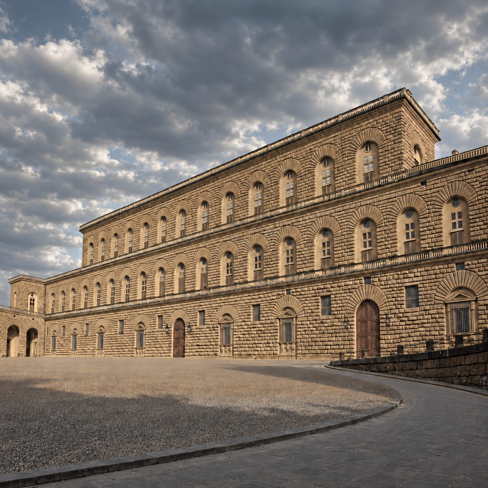

碧提宮中文語音導覽
義大利 · 佛羅倫斯 · Palazzo Pitti
310 件館藏，每件都有中文解說
美第奇家族的宮殿。從拉斐爾《椅中聖母》《戴頭紗的女子》到提香、卡諾瓦和卡拉瓦喬，碧提宮的藏品與廳室都有中文導覽。
- 普通話（台灣）
- 粵語（香港）
- 普通話（內地）
即將上架 App Store
App 即將上架，敬請期待。上架後免費下載，每座博物館單獨購買，一次購買永久使用。
解說包含這些名作
 維納斯廳彼得羅·達·科爾托納
維納斯廳彼得羅·達·科爾托納 義大利的維納斯卡諾瓦
義大利的維納斯卡諾瓦 戰神廳彼得羅·達·科爾托納
戰神廳彼得羅·達·科爾托納 戰爭的後果魯本斯
戰爭的後果魯本斯 朱比特廳彼得羅·達·科爾托納
朱比特廳彼得羅·達·科爾托納 椅中聖母拉斐爾
椅中聖母拉斐爾 戴頭紗的女子拉斐爾
戴頭紗的女子拉斐爾 大公聖母拉斐爾
大公聖母拉斐爾 音樂會提香
音樂會提香 美人提香
美人提香 年輕的英國人提香
年輕的英國人提香 聖抹大拉馬利亞提香
聖抹大拉馬利亞提香 熟睡的丘比特卡拉瓦喬
熟睡的丘比特卡拉瓦喬 茱迪斯與赫羅弗尼斯的頭顱阿洛里
茱迪斯與赫羅弗尼斯的頭顱阿洛里 巴爾托利尼圓畫菲利波·李比
巴爾托利尼圓畫菲利波·李比 綠廳路卡·喬丹奴
綠廳路卡·喬丹奴 王座廳薩伏依王朝 · 王室套房
王座廳薩伏依王朝 · 王室套房 馬真塔戰役後的義大利軍營喬凡尼·法托利
馬真塔戰役後的義大利軍營喬凡尼·法托利 看，這個人！安東尼奧·奇塞利
看，這個人！安東尼奧·奇塞利 布翁塔倫蒂岩洞瓦薩里、布翁塔倫蒂
布翁塔倫蒂岩洞瓦薩里、布翁塔倫蒂……還有更多，共 310 件。
三種中文，聽你最熟悉的那一種
- 普通話（台灣）台灣口音的國語解說，繁體中文講稿。
- 粵語（香港）道地廣東話解說，講稿也以廣東話書寫，繁體中文。
- 普通話（內地）標準普通話解說，簡體中文講稿。
參觀小提醒
- 出發前在 Wi-Fi 下把碧提宮整館導覽下載好，館內沒有網路也能用。
- 帶上耳機，在展廳裡不打擾別人。
- 看到有興趣的作品，舉起手機對準就能辨識；也可以在作品列表依名稱搜尋。